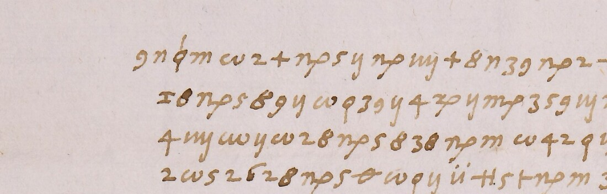

At a glanceKey from adjacent plaintext · partial (91% of the cipher)
- The letter
- Girolamo Muzio, writing from Rome to Ferrante Gonzaga, in the days of the conclave that followed the death of Paul III. All the news of the letter is in one block of 25 cipher lines; a clear heading and four closing lines frame it. A second letter of 12 January shares the key.
- Where
- Biblioteca Estense Universitaria, Modena, Autografoteca Campori, Lettera M, Muzio, Girolamo, cc. 3-4 (the cipher is on c. 3r only) and cc. 5-6. Catalogue entry 1564, one of five letters of Ferrante’s correspondents; the Estense records say “Lettera cifrata” and mention no decipherment.
- The cipher
- Simple substitution on letter-like signs and single digits, written without word division: two signs each for a, e, i, o, u and s, a sign for each doubled letter, five signs that stand for nothing, and a small code of number groups for titles and persons. 860 units on c. 3r.
- How it was read
- The first values came from letters an early hand wrote over one cipher line of the sister letter and from the clear text round that passage; the rest of the key was completed by reading. The c. 5v passage was then decrypted and matched a marginal decipherment on the sheet. Not a ciphertext-only solution.
- What it says
- A courier is said to have come back from the court (taken to be the imperial court) to ask that either Santa Croce or Monte be made Pope; Muzio thinks the news true but does not expect the plan to succeed.
- Still open
- Code groups 13 and 24 have no value, 26 and 4o rest on context, two signs occur once, and omega reads ss three times. 18 of 198 words are holes by the README rule, so the class is read in part. The sister letter’s cipher was read once by a reader who knew the key.
- Credit
- Transcriptions, key, reading and checks contributed by Malcolm McBratney (Brisbane), working with AI agents, as issue #405 and pull request #445 of 11–12 November 2026. Daniel Bourdeau pointed to two minim readings and an undeclared emendation, now corrected.
01 The documents
The catalogue entry lists two letters of Muzio to Ferrante Gonzaga from January 1550 in the Autografoteca Campori. The first (cc. 3-4) is dated Rome, 11 January 1550. Of the letter only c. 3r carries writing: a clear heading, one block of 25 cipher lines and clear closing lines (which say that the cardinals are having the conclave opened on the Belvedere side to take the air). Cc. 3v and 4r are blank and c. 4v holds the address and docket, so the catalogue’s “cc. 3-4” is one page of cipher. The second letter (cc. 5-6, 12 January 1550) is mostly clear, with two cipher passages: nine lines on c. 5r and three on c. 5v, 339 units in all.
On the sister letter an early hand, not Muzio’s and not dated, wrote letters over one cipher line of c. 5r and a decipherment of the c. 5v passage in the left margin. That is what the key rests on. The block on c. 3r has no decipherment on any leaf. Ronchini’s edition (Lettere di Girolamo Muzio, Parma 1864) prints a different, clear letter of 10 January and one of 11 January; the contributor found no reading of either cipher in it or elsewhere (the Parma originals and later editions were not reached).

02 The cipher
The key has 47 rows (key.tsv; the sign names are the transcribers’, not values). The letters are written with letter-like signs and single digits, two signs for each of a, e, i, o, u and s, and one sign each for the doubled letters ll, rr, tt, pp, nn and ff. Four digit pairs (38, 39, 42, 43) and a barred circle stand for nothing; the barred circle also marks a break between clauses. A small code adds the number groups 13, 24, 25, 26, 1o and 4o and one sign (CE) for titles and persons. There is no word division.
The sign for o has three minims and a tail and the sign for i has two. All but one of the differences between the two transcriptions of c. 3r are at that point, and so were the three corrections Daniel Bourdeau asked for (below).
| Code | Value | Basis |
|---|---|---|
| CE | Cardinale | c. 5v: cipher “al CE nostro”, margin “al Car.le n[ost]ro” |
| 25 | V. Ecc. (Your Excellency) | c. 5v: cipher “che 25 ha mandato”, margin “che V. Ex. gli ha ma[ndato]” |
| 26 | Sua Maestà | context only (“fosse contenta”, “hanno scoperta questa pratica a 26”); taken as the Emperor |
| 4o | Duca di | context only (“4o Firenze”, “il 4o Alua”) |
| 1o | Don Diego | context only, c. 5r only |
| 13, 24 | no value | one occurrence each on c. 3r (“un corrier di 13”, “il Prior di 24”) |
03 How the key was found
- 10 November 2026: a first transcription of c. 3r (904 tokens) was compared with the Gonzaga keys in this repository (
ferrante1549,ercole1544,capilupi1545,bresegno1548): none fits by sign set. The contributor’s own annealer with Italian quadgrams then failed on this transcription and on five variants, because it had merged look-alike signs. - The sister letter’s c. 5r passage, with word dividers and the letters t r a d ij o a added over one line by the early hand, gave c o n t r a d with the two signs before them; the clear text before and after the passage gave “per questo” and “scoperta questa pratica” and so most of the alphabet.
- c. 3r was transcribed again from line strips with the look-alike signs split (861 units) and the key completed by reading. The reader knew values from line 5 on.
- 12 November: the c. 5v passage, not used before, decrypted with the key as it stood to “scrivere al CE nostro ma poi non havendo risposta di quello che 25 ha mandato”, which matches the early hand’s margin and gave the two code values above.
The method is a key recovered from adjacent plaintext. That the key was frozen before the c. 5v test and before the blind transcription rests on the contributor’s record (one pull request, his own manifests and timestamps): the token imprints and the files he sent agree with it, and nothing outside his files fixes the order.
04 The reading
Marks: word° a sign corrected on the image (not an emendation); fo[ss]e a letter emended against the key; [?word] a value from context only; [13] a code with no value; [Cardinale] a code confirmed by the c. 5v margin. Spelling, u/v, capitals and punctuation are the contributor’s.
Dalla corte è tornato un corrier di [13], il qual si° intende che fu espedito per supplicar a [?Sua Maestà] che fo[ss]e contenta che si crea[ss]e [?o] Santa Croce o Monte; che questa pratica è stata aiutata dal [?Duca di] Firenze. Costui par che habia portato che [?Sua Maestà] si contenta di Monte. La qual novella parendomi che importi° a [V. Ecc.], non ho voluto tardar di dargliene notitia. A me ha detta questa cosa il Prior di [24], conformando° questo con quello che per una altra mia, che vien con questa, le scrivo della cedula del [Cardinale] de Medici. Entro in opinione che debia e[ss]er vero. Pur questa è reputata pratica [m]olto difficile°, da non risolversi così tosto. Io, considerata la autorità del [Cardinale] nostro, la congiuntion sua con Ferrara, la aut[o]rità di Ferrara co°[?n gli] Francesi, mi persuado che la cosa non habia a riuscire, salvo se da tutto° il mondo non siamo abandonati. Né so° come gli Imperiali, che a Monte non hanno affettione particolare, per questa nova resolutione habiano da condiscendere a dargli i voti°, sapendo che questa non è la vera intentione di [?Sua Maestà], ma un segnale di voler compiacere altrui.
A courier of [13] has come back from the court, who, it is understood, was sent to beg [?His Majesty] to be content that [?either] Santa Croce or Monte be made Pope; and that this scheme has been helped by the [?Duke of] Florence. This man seems to have brought word that [?His Majesty] is content with Monte. As this news seems to me to matter to [Your Excellency], I did not want to delay in giving you notice of it. The Prior of [24] told me this, squaring it with what I write to you, in another letter of mine that comes with this one, about the note of the [Cardinal] de’ Medici. I come to think it must be true. Yet this is held to be a very difficult scheme, not to be settled so soon. For my part, considering the authority of our [Cardinal], his bond with Ferrara, and the authority of Ferrara with [?the] French, I am persuaded that the thing will not succeed, unless we are abandoned by the whole world. Nor do I know how the Imperialists, who have no particular affection for Monte, should for this new resolution come down to giving him their votes, knowing that this is not the true intention of [?His Majesty], but a sign of wishing to please someone else.
The letter belongs, by the contributor’s notes, to the conclave of 1549–50 after the death of Paul III. “Santa Croce” and “Monte” are, on the contributor’s identification, Cardinals Marcello Cervini and Giovanni Maria del Monte, who was elected Julius III on 7 February 1550; “our Cardinal” and “Ferrara” are taken as Ercole Gonzaga and Ippolito d’Este. These identifications are his, from context, and this background was not checked here against a study of the conclave. Ronchini prints the companion letter of 10 January, which speaks of the Medici note; it contains none of this cipher.
Corrections since the issue. The first version read dofficole and declared one emendation; both signs have two minims and a tail, the i sign, so the sheet has difficile. The sign after “ne s” on line 20 has three minims, so the sheet has “Né so come”, and the last sign of “uot-” on line 23 has two, so “i voti” (the issue had “si come” and “il voto” with an emended article). Comparing every unit where the two transcriptions differ gave four more corrections, one changed word (conformando, not confirmando) and one struck sign. The five emendations that remain are three omegas read ss (fosse, creasse, esser), polto for molto and aute for autorità.
05 What was counted and checked
| Measure | Result |
|---|---|
| Words read, README rule (c. 3r) | 198 words, 18 holes: 0.909. The holes are the two codes without a value, 26 (three times) and 4o as context-only values, five emended words and two single signs. The code groups that rest on the c. 5v margin (Cardinale twice, V. Ecc.) count as read; counted as holes too the share is 0.889 (22 of 198). |
| Cipher units read by the key (contributor’s count) | 844 of 860 (806 letters and 38 nulls) = 98.1%; letters only 806 of 822; with the nine code tokens counted apart 0.957 of the words. These are his figures; the class follows the word figure above. |
| Shuffled keys | Italian quadgram score of the key-only decryption -3.922 per character against a best of -6.295 in 5,000 shuffled keys (version 1 of the transcription, the contributor’s run). A test run here on version 2 (docs/_validate.py, 849 read tokens): reading -1.882, random keys -4.679, a key fitted to shuffled ciphertext at best -3.187: pass. |
| Blind second transcription | Another session, with no key and no reading, agrees with the first on 873 of 883 digit-split units (98.87%; the contributor's count is 851 of 861); the 10 differences were checked on the image: the blind reader was right on 9. |
| Decoder written separately here | Reproduces the decryption of c. 3r (25 lines) and of the sister letter (12 lines) exactly; the Italian reading equals the decryption letter for letter except u/v and the declared emendations. |
| Transcription against the image | About 70 signs of lines 5–7 compared here for order and shape: they agree (the three-or-two minim count of o and i was not judged at that size). The earlier check of the issue compared about 150 signs of ten lines (6, 7, 14-16, 19-20, 22-24). |
The sister letter’s cipher was read once, by a reader who knew the key, at 60–70% scale and without the minim check done on c. 3r; its clear text was read once at a quarter of the scale and is not collated. Several sessions of one model family made the transcriptions and the reading; no person read the signs without AI.
06 What remains uncertain
- Codes. 13 and 24 have no value; 26 (taken as the Emperor), 4o and 1o rest on context. A key sheet or more letters in this cipher would settle them.
- Single signs. PSI (line 3), OP (line 17) and, on the sister letter, OX occur once. “o” and “n gli” are guesses.
- Omega. It reads c 46 times and ss three times: a polyphone, or a second form not told apart on the image.
- The sister letter. One unread sign, three doubtful words (“e ha per farsi” disagrees with its plural verb; “contradi[?o] [?g]agliardo officio” is a proposal), and the date of the early hand.
- Prior art. The Parma originals of Ferrante Gonzaga’s papers (where a key or a deciphered copy may lie), Negri’s 2000 edition of the letters and the conclave literature were not reached.
- Catalogue. Entry 1564 listed five letters; the Rossi letters (a different cipher) have their own page and the Gosellini letter of 1555 stays in the catalogue.
Full texts
The transcription and the decryption of every document on this page, so that the reading can be used and checked. Short files are shown here; all are in the repository.
Muzio to Ferrante Gonzaga, Rome, 11 Jan 1550, c. 3r read in part
From the conclave of 1549-50. A courier back from the court (taken to be the imperial court) is said to bring the court's consent (the Emperor, if code 26 is read so) to Monte (or Santa Croce) as Pope, a scheme helped by the Duke of Florence. Muzio thinks the news true but does not expect the scheme to succeed, and does not see how the Imperialists would vote for Monte. Del Monte was elected Julius III on 7 Feb 1550.
Builds coherent sentences, but under the read bar of 95% of words read as sense (91% here); the holes are marked in the reading.
Transcription
# Girolamo Muzio to Ferrante Gonzaga, Rome, 11 Jan 1550. Biblioteca Estense Universitaria, Modena, Autografoteca Campori, Lettera M, Muzio, Girolamo, c. 3r. # Cipher block, 25 lines, 860 units (two signs struck by the writer on L17 are written [x] and not counted). Version 2, 12 Nov 2026. # Version 1 was the pass of 11 Nov 2026 (timestamps/stamped/c3r_pass2.txt, 861 units; one reader, not blind from line 5 on). # Version 2 changes nine units after checking them on the Estense IIIF image at full resolution (1,024 px tiles, 3x crops): see corrections_c3r.tsv. # Sign labels are ours (shape names, not values): # g=9-shape n=two minims m=three minims w=omega P=n with p-tail S=m with p-tail X=x with p-tail # O=three minims and a y-tail I=two minims and a y-tail y=one minim and a y-tail q F=tall phi # H=narrow H #=wide double cross +=cross t=hooked cross R=cross with small o T=m with crossed tail PP=cross with dots NN=phi with foot-cross # FF=bar with two dots E=circle with bar through both sides G=circle with bar to the right u=u with two dots Z=barred Z v=small v PSI=psi-like (once) # OP=ring with p-tail (once) CE=e-shaped bowl with long bar N38 N39 N42 N43=digit pairs written as one group C13 C24 C25 C26 C4o=number groups [x]=struck by the writer L01 g n F m w 2 + P 5 y P O + 8 n N39 P 2 # 8 w 2 R I y + g = C13 I H u X n H S I L02 = 8 P 5 8 g y w q N39 y 4 X y S 3 5 g I P 2 3 5 + S # PP H I w n + m C26 w q 5 L03 4 O w y w 2 8 P 5 8 N38 P m w N42 q y S I w + y m w 5 PSI t n 8 P m w + L04 2 w 5 2 6 2 8 P 5 E w q y u # 5 t P m 3 + m P I w m 5 S P n N39 P m n I X L05 P n N42 P m g m H C4o 4 I + 5 8 v y E w 2 S P # = 3 m + w q N38 y q m Z I n L06 3 O + P n N39 P 2 w N42 q 5 C26 t I w O 8 P 5 8 N39 P m g I 6 O 8 P y H m u L07 # m H 8 O X y F m 3 n + 5 8 g O 6 I w q y I 6 3 2 + P I m C25 8 O N42 8 q 2 # O L08 H X P O P n + g m + g I N39 g m + G H = y 8 5 N43 8 O P I N42 P I m n 6 y q n L09 g y T n u # y S P m w 2 t n = H 3 + I O + g I C24 E w 2 8 4 O + 6 m 8 g 2 L10 u X y t P O w 2 8 u X y F 2 w N43 q 5 3 y + X 8 n m H P + m 6 I n w q y X L11 I y 8 w 2 8 u # 5 S N43 P n H y S w + I # 2 g 5 F m w 5 g X H n g 5 H CE L12 g 5 6 y g I w = y 8 P + O I 8 O 3 = 8 I O 8 y w q N39 y g y Z = n y w 5 + X y L13 + 2 3 # + u X N38 5 t P n 5 + y 3 X P n N43 P m 3 + n P I w m 3 O H P 2 L14 g I FF I w I H 5 E g n 8 2 N43 8 + I t 2 H # 5 + S I w O t = P 2 S N39 P O L15 E I 2 w 2 8 S I g 5 + n P m H m n X P 2 + I N42 P m g 5 H CE 8 2 S P L16 + O E H m w O 8 G I # 8 P I O 8 S X m w 2 8 4 5 R m + n E H m n # L17 P 5 [x] N42 [x] + = N39 P n g = 4 y N39 R m N43 + n w O OP 4 + n 8 w y t I L18 6 I 3 y + t X n g O w q 5 H m w 2 t n 8 O N39 N42 8 q m Z I n m + I X S L19 w I + y t m H X 2 t 5 g n P X T O = H 6 2 8 g O 8 2 8 S = n 6 2 m Z L20 n 8 g O 8 m P I 8 y S O w 2 6 y G H I = 6 3 5 + I n H I w q 5 m 6 2 8 P L21 y 8 2 N39 8 q m NN 2 m FF y T I O 8 5 3 m + P I w 2 H n + 5 3 y + u # y S L22 P n 8 2 X n + y t 2 H X P I O 8 y q m Z I n 8 2 g n w 2 8 g I S w L23 y 8 g 5 + N43 y n g n + G H I = X O P I t n 3 5 8 g O w q y u X y S L24 P n 8 N39 2 8 5 H n # 5 + m I 8 P y 8 P = 2 8 y g = C26 6 m X 8 S y L25 G 8 n H 5 g I # 2 H y + w 2 6 3 I m w y + y m H P + X I
Transcription
9 n phi m w 2 + np 5 y np uy + 8 n 3 9 np 2 tH 8 w 2 +o iy y + 9 I 1 3 iy H ud xp n H mp iy I 8? np 5 8 9 y w q 3 9 y 4 xp y mp 3 5 9 iy np 2 3 5 + mp tH +.. H iy w n + m 2 6 w q 5 4 uy w y w 2 8 np 5 8 3 8 np m w 4_2 q y mp iy w + y m w 5 psi r n 8 np m w + 2 w 5 2 6 2 8 np 5 -o- w q y ud tH 5 r np m 3 + m np iy w m 5 mp np n 3 9 np m n iy xp np n 4_2 np m 9 m H 4o 4 iy + 5 8 V y -o- w 2 mp np tH I 3 m + w q 3 8 y q m Z iy n 3 uy + np n 3 9 np 2 w 4_2 q 5 2_6 r iy w uy 8 np 5 8 3 9 np m 9 iy 6 uy 8 np y H m ud tH m H 8 uy xp y phi m 3 n + 5 8 9 uy 6 iy w q y iy 6 3 2 + np iy m 2 5 8 uy 4_2 8 q 2 tH uy H xp np uy np n + 9 m + 9 iy 3 9 9 m + o- H I y 8 5 4_3 8 uy np iy 4_2 np iy m n 6 y q n 9 y mt n ud tH y mp np m w 2 r n I H 3 + iy uy + 9 iy 2 4 -o- w 2 8 4 uy + 6 m 8 9 2 ud xp y r np uy w 2 8 ud xp y phi 2 w 4_3 q 5 3 y + xp 8 n m H np + m 6 iy n w q y xp iy y 8 w 2 8 ud tH 5 mp 4_3 np n H y mp w + iy tH 2 9 5 phi m w 5 9 xp H n 9 5 H e- 9 5 6 y 9 iy w I y 8 np + uy iy 8 uy 3 I 8 iy uy 8 y w q 3 9 y 9 y Z I n y w 5 + xp y + 2 3 tH + ud xp 3 8 5 r np n 5 + y 3 xp np n 4_3 np m 3 + n np iy w m 3 uy H np 2 9 iy bd iy w iy H 5 -o- 9 n 8 2 4_3 8 + iy r 2 H tH 5 + mp iy w uy r I np 2 mp 3 9 np uy -o- iy 2 w 2 8 mp iy 9 5 + n np m H m n xp np 2 + iy 4_2 np m 9 5 H e- 8 2 mp np + uy -o- H m w uy 8 o- iy tH 8 np iy uy 8 mp xp m w 2 8 4 5 +o m + n -o- H m n tH np 5 DEL 4_2 DEL + I 3 9 np n 9 I 4 y 3 9 +o m 4_3 + n w uy op 4 + n 8 w y r iy 6 iy 3 y + r xp n 9 uy w q 5 H m w 2 r n 8 uy 3 9 4_2 8 q m Z iy n m + iy xp mp w iy + y r m H xp 2 r 5 9 n np xp mt uy I H 6 2 8 9 uy 8 2 8 mp I n 6 2 m Z n 8 9 uy 8 m np iy 8 y mp uy w 2 6 y o- H iy I 6 3 5 + iy n H iy w q 5 m 6 2 8 np y . 8 2 3? 9? 8 | q m venus 2 m bd y mt iy uy 8 5 3 m + np iy w 2 H n + 5 3 y + ud tH y mp np n 8 2 xp n + y r 2 H xp np iy uy 8 y q m Z iy n 8 2 9 n w 2 8 9 iy mp w y 8 9 5 + 4_3 y n 9 n + o- H iy I xp uy np iy r n 3 5 8 9 uy w q y ud xp y mp np n 8 3 9 2 8 5 H n tH 5 + m iy 8 np y 8 np I 2 8 y 9 I 2_6 sig m xp 8 mp y o- 8 n H 5 9 m tH 2 H y + w 2 6 3 iy m w y + y m H np + xp iy .
Decryption
# Sign-by-sign decryption of transcription_c3r.txt with key.tsv, unrepaired. Written by scripts/decrypt.py.
# . = null {..} = code group <..> = sign with no key value x = sign struck by the writer
# The emendations are NOT applied here: they are listed in emendations_c3r.tsv and marked in the reading.
L01 cipher : g n F m w 2 + P 5 y P O + 8 n N39 P 2 # 8 w 2 R I y + g = C13 I H u X n H S I
L01 decrypt: dallacorteetorna.touncorrierdi{13}ilqualsi
L02 cipher : = 8 P 5 8 g y w q N39 y 4 X y S 3 5 g I P 2 3 5 + S # PP H I w n + m C26 w q 5
L02 decrypt: intendech.efuespeditopersupplicara{26}che
L03 cipher : 4 O w y w 2 8 P 5 8 N38 P m w N42 q y S I w + y m w 5 PSI t n 8 P m w +
L03 decrypt: foceconten.tac.hesicreace<PSI>santacr
L04 cipher : 2 w 5 2 6 2 8 P 5 E w q y u # 5 t P m 3 + m P I w m 5 S P n N39 P m n I X
L04 decrypt: oceomonte.chequestapraticaesta.taaiu
L05 cipher : P n N42 P m g m H C4o 4 I + 5 8 v y E w 2 S P # = 3 m + w q N38 y q m Z I n
L05 decrypt: ta.tadal{4o}firenze.costuiparch.ehabia
L06 cipher : 3 O + P n N39 P 2 w N42 q 5 C26 t I w O 8 P 5 8 N39 P m g I 6 O 8 P y H m u
L06 decrypt: porta.toc.he{26}siconten.tadimontelaq
L07 cipher : # m H 8 O X y F m 3 n + 5 8 g O 6 I w q y I 6 3 2 + P I m C25 8 O N42 8 q 2 # O
L07 decrypt: ualnouellaparendomicheimportia{25}no.nhouo
L08 cipher : H X P O P n + g m + g I N39 g m + G H = y 8 5 N43 8 O P I N42 P I m n 6 y q n
L08 decrypt: lutotardardi.dargliene.noti.tiaameha
L09 cipher : g y T n u # y S P m w 2 t n = H 3 + I O + g I C24 E w 2 8 4 O + 6 m 8 g 2
L09 decrypt: dettaquestacosailpriordi{24}.conformando
L10 cipher : u X y t P O w 2 8 u X y F 2 w N43 q 5 3 y + X 8 n m H P + m 6 I n w q y X
L10 decrypt: questoconquelloc.heperunaaltramiacheu
L11 cipher : I y 8 w 2 8 u # 5 S N43 P n H y S w + I # 2 g 5 F m w 5 g X H n g 5 H CE
L11 decrypt: ienconques.talescriuodellaceduladel{CE}
L12 cipher : g 5 6 y g I w = y 8 P + O I 8 O 3 = 8 I O 8 y w q N39 y g y Z = n y w 5 + X y
L12 decrypt: demedicientroinopinionech.edebiaecerue
L13 cipher : + 2 3 # + u X N38 5 t P n 5 + y 3 X P n N43 P m 3 + n P I w m 3 O H P 2
L13 decrypt: ropurqu.estaereputa.tapraticapolto
L14 cipher : g I FF I w I H 5 E g n 8 2 N43 8 + I t 2 H # 5 + S I w O t = P 2 S N39 P O
L14 decrypt: difficile.dano.nrisoluersicositos.to
L15 cipher : E I 2 w 2 8 S I g 5 + n P m H m n X P 2 + I N42 P m g 5 H CE 8 2 S P
L15 decrypt: .ioconsideratalaautori.tadel{CE}nost
L16 cipher : + O E H m w O 8 G I # 8 P I O 8 S X m w 2 8 4 5 R m + n E H m n #
L16 decrypt: ro.lacongiuntionsuaconferrara.laau
L17 cipher : P 5 [x] N42 [x] + = N39 P n g = 4 y N39 R m N43 + n w O OP 4 + n 8 w y t I
L17 decrypt: tex.xri.tadife.rra.raco<OP>francesi
L18 cipher : 6 I 3 y + t X n g O w q 5 H m w 2 t n 8 O N39 N42 8 q m Z I n m + I X S
L18 decrypt: mipersuadochelacosano..nhabiaarius
L19 cipher : w I + y t m H X 2 t 5 g n P X T O = H 6 2 8 g O 8 2 8 S = n 6 2 m Z
L19 decrypt: ciresaluosedatuttoilmondononsiamoab
L20 cipher : n 8 g O 8 m P I 8 y S O w 2 6 y G H I = 6 3 5 + I n H I w q 5 m 6 2 8 P
L20 decrypt: andonatinesocomegliimperialicheamont
L21 cipher : y 8 2 N39 8 q m NN 2 m FF y T I O 8 5 3 m + P I w 2 H n + 5 3 y + u # y S
L21 decrypt: eno.nhannoaffettioneparticolareperques
L22 cipher : P n 8 2 X n + y t 2 H X P I O 8 y q m Z I n 8 2 g n w 2 8 g I S w
L22 decrypt: tanouaresolutionehabianodacondisc
L23 cipher : y 8 g 5 + N43 y n g n + G H I = X O P I t n 3 5 8 g O w q y u X y S
L23 decrypt: ender.eadargliiuotisapendocheques
L24 cipher : P n 8 N39 2 8 5 H n # 5 + m I 8 P y 8 P = 2 8 y g = C26 6 m X 8 S y
L24 decrypt: tan.onelaueraintentionedi{26}maunse
L25 cipher : G 8 n H 5 g I # 2 H y + w 2 6 3 I m w y + y m H P + X I
L25 decrypt: gnalediuolercompiacerealtruiReading
# Girolamo Muzio to Ferrante Gonzaga, Rome, 11 Jan 1550, c. 3r: the cipher block <!-- Marks and notes: editorial.md. word° = sign corrected on the image; fo[ss]e = emended; [?word] = from context only; [13] = code with no value; [Cardinale] = code confirmed by the c. 5v margin; (?) = doubtful word; ⟦ ⟧ = deciphered from cipher. --> ## Reading Dalla corte è tornato un corrier di [13], il qual si° intende che fu espedito per supplicar a [?Sua Maestà] che fo[ss]e contenta che si crea[ss]e [?o] Santa Croce o Monte; che questa pratica è stata aiutata dal [?Duca di] Firenze. Costui par che habia portato che [?Sua Maestà] si contenta di Monte. La qual novella parendomi che importi° a [V. Ecc.], non ho voluto tardar di dargliene notitia. A me ha detta questa cosa il Prior di [24], conformando° questo con quello che per una altra mia, che vien con questa, le scrivo della cedula del [Cardinale] de Medici. Entro in opinione che debia e[ss]er vero. Pur questa è reputata pratica [m]olto difficile°, da non risolversi così tosto. Io, considerata la autorità del [Cardinale] nostro, la congiuntion sua con Ferrara, la aut[o]rità di Ferrara co°[?n gli] Francesi, mi persuado che la cosa non habia a riuscire, salvo se da tutto° il mondo non siamo abandonati. Né so° come gli Imperiali, che a Monte non hanno affettione particolare, per questa nova resolutione habiano da condiscendere a dargli i voti°, sapendo che questa non è la vera intentione di [?Sua Maestà], ma un segnale di voler compiacere altrui.
Translation
# Girolamo Muzio to Ferrante Gonzaga, Rome, 11 Jan 1550, c. 3r: English translation of the cipher block
Same holes as reading_c3r.md: `[?...]` = value proposed from context only; `[13]`, `[24]` = code group with no value; `[Cardinal]`, `[Your Excellency]` = code group whose value the c. 5v margin gives. Emended words are marked in the Italian.
## Translation
A courier of [13] has come back from the court, who, it is understood, was sent to beg [?His Majesty] to be content that [?either] Santa Croce or Monte be made Pope; and that this scheme has been helped by the [?Duke of] Florence. This man seems to have brought word that [?His Majesty] is content with Monte. As this news seems to me to matter to [Your Excellency], I did not want to delay in giving you notice of it. The Prior of [24] told me this, squaring it with what I write to you, in another letter of mine that comes with this one, about the note of the [Cardinal] de' Medici. I come to think it must be true. Yet this is held to be a very difficult scheme, not to be settled so soon. For my part, considering the authority of our [Cardinal], his bond with Ferrara, and the authority of Ferrara with [?the] French, I am persuaded that the thing will not succeed, unless we are abandoned by the whole world. Nor do I know how the Imperialists, who have no particular affection for Monte, should for this new resolution come down to giving him their votes, knowing that this is not the true intention of [?His Majesty], but a sign of wishing to please someone else.
## Notes
- "[?His Majesty]": code 26, taken as the Emperor Charles V. The Italian is "Sua Maestà", feminine in grammar ("fosse contenta").
- "Santa Croce" is Cardinal Marcello Cervini; "Monte" is Cardinal Giovanni Maria del Monte, elected Julius III on 7 Feb 1550.
- "our Cardinal": taken as Ercole Gonzaga, Ferrante's brother, with whom Muzio was in Rome. "Ferrara": taken as Cardinal Ippolito d'Este. Both identifications are ours, from context.Muzio to Ferrante Gonzaga, Rome, 12 Jan 1550, cc. 5r-5v (the letter the key rests on) read in part
Mostly clear. The cipher reports talk from the conclave: Ferrante and Don Diego had backed Salviati; the Dukes of Florence and Alba disclosed it to the Emperor; Salviati was excluded and Don Diego drew back. In clear, Muzio argues that the candidate Ferrante favours is the fittest in the college.
Builds coherent sentences, but its word share is at or above the 95% read bar, and it stays read in part for another reason stated on this page (95% here); the holes are marked in the reading.
Transcription
# Girolamo Muzio to Ferrante Gonzaga, Rome, 12 Jan 1550. Biblioteca Estense Universitaria, Modena, Autografoteca Campori, Lettera M, Muzio, Girolamo, cc. 5r-5v. # The two cipher passages of the letter. C1-C9: c. 5r, nine lines inside the clear text. D1-D3: c. 5v, three lines inside the clear text. # One reader, 12 Nov 2026, from the Estense IIIF image at 60-70% scale, starting from the provisional pass of 11 Nov (timestamps/stamped/c5r_passage.txt, C lines only). # Not blind (the key was known) and the minims of O / I were not checked sign by sign as on c. 3r. D1-D3 are new on 12 Nov. # Sign labels as in transcription_c3r.txt, plus C1o = number group 1o, OX = ring with a crossed tail (once), / = pencil or ink word divider added on the sheet by an early hand, # [x] = struck or blotted by the writer, n? = doubtful sign. The clear text around the passages is in reading_c5.md. C1 C25 E C1o q n X y # n 8 2 P O H P n H m 3 + 2 P y T I O 8 5 g = S C2 n H X I m P O / y q n 3 y + 4 m + t I w 2 8 P n H 4 m X 2 + 5 / C4o 6 y H n 8 2 C3 E C1o 3 m P + 2 8 g I t = y 8 n? E w q N43 y / I H C4o 4 I O + 5 8 v n E = H C4o C4 m H # m / q n NN O S w O 3 5 + P m u X 5 S P n 3 + n P = w n / m C26 C5 2 8 / g y 8 5 [x] y t 5 G # I P n H m 5 S w H # S I O 8 / g I H # I / 4 n [x] C6 T m g n F 2 OX E w q y / 3 y + u # 5 t P 2 / C1o / 3 y + w O 3 + I + S = / 8 2 C7 N39 8 S 2 H m 6 y 8 P 5 / S y 8 5 y + I P I + n P O 6 n q m 4 n T 2 w C8 2 8 P + m g I E m N39 G H = n + g O O FF I w = O E C9 = H CE 8 O S P + 2 S I 5 + n FF y g n P O D1 N42 S w + I # y + 5 n H CE 8 O S P + 2 6 n 3 2 I D2 8 2 N43 8 / q m # y 8 g 2 + I S 3 2 S P n / g = u X 5 F 2 / w q y / C25 q n 6 m 8 D3 g m P 2
Decryption
# Sign-by-sign decryption of transcription_c5.txt with key.tsv, unrepaired. Written by scripts/decrypt.py.
# . = null {..} = code group <..> = sign with no key value x = sign struck by the writer
# The emendations are NOT applied here: they are listed in emendations_c3r.tsv and marked in the reading.
C1 cipher : C25 E C1o q n X y # n 8 2 P O H P n H m 3 + 2 P y T I O 8 5 g = S
C1 decrypt: {25}.{1o}haueuanotoltalaprotettionedis
C2 cipher : n H X I m P O / y q n 3 y + 4 m + t I w 2 8 P n H 4 m X 2 + 5 / C4o 6 y H n 8 2
C2 decrypt: aluiatoehaperfarsicontalfauore{4o}melano
C3 cipher : E C1o 3 m P + 2 8 g I t = y 8 n? E w q N43 y / I H C4o 4 I O + 5 8 v n E = H C4o
C3 decrypt: .{1o}patrondisiena.ch.eil{4o}fiorenza.il{4o}
C4 cipher : m H # m / q n NN O S w O 3 5 + P m u X 5 S P n 3 + n P = w n / m C26
C4 decrypt: aluahannoscopertaquestapraticaa{26}
C5 cipher : 2 8 / g y 8 5 [x] y t 5 G # I P n H m 5 S w H # S I O 8 / g I H # I / 4 n [x]
C5 decrypt: ondenexeseguitalaesclusiondiluifax
C6 cipher : T m g n F 2 OX E w q y / 3 y + u # 5 t P 2 / C1o / 3 y + w O 3 + I + S = / 8 2
C6 decrypt: ttadallo<OX>.cheperquesto{1o}percoprirsino
C7 cipher : N39 8 S 2 H m 6 y 8 P 5 / S y 8 5 y + I P I + n P O 6 n q m 4 n T 2 w
C7 decrypt: .nsolamenteseneeritiratomahafattoc
C8 cipher : 2 8 P + m g I E m N39 G H = n + g O O FF I w = O E
C8 decrypt: ontradi.a.gliardoofficio.
C9 cipher : = H CE 8 O S P + 2 S I 5 + n FF y g n P O
C9 decrypt: il{CE}nostrosieraffedato
D1 cipher : N42 S w + I # y + 5 n H CE 8 O S P + 2 6 n 3 2 I
D1 decrypt: .scriuereal{CE}nostromapoi
D2 cipher : 8 2 N43 8 / q m # y 8 g 2 + I S 3 2 S P n / g = u X 5 F 2 / w q y / C25 q n 6 m 8
D2 decrypt: no.nhauendorispostadiquelloche{25}haman
D3 cipher : g m P 2
D3 decrypt: datoReading
# Girolamo Muzio to Ferrante Gonzaga, Rome, 12 Jan 1550, cc. 5r-5v: the whole letter <!-- Marks and notes: editorial.md. word° = sign corrected on the image; fo[ss]e = emended; [?word] = from context only; [13] = code with no value; [Cardinale] = code confirmed by the c. 5v margin; (?) = doubtful word; ⟦ ⟧ = deciphered from cipher. --> ## Reading Ill.mo et Ecc.mo S. Scrissi hieri due lettere a V. Ecc.a, et percioche le scrissi così summariamente il haver parlato al S. Don Diego, hora le torno a dir che cercai di chiarirmi se vera era la novella che mi era stata detta; et ricordai lo interesse della Ecc.a V. Et mi rispose che la novella non era vera, et che non si sarebbe mancato di far che alla Ecc.a V. non fosse fatto un tale pregiudicio. Di conclavi vengono diverse nuove, le quali si conformano in questa sentenza: che ⟦[V. Ecc.], [?Don Diego] havevano tolta la protettione di Salviato, e ha (?) per farsi con tal favore [?Duca di] Melano, [?Don Diego] patron di Siena (?); che il [?Duca di] Fiorenza, il [?Duca di] Alva hanno scoperta questa pratica a [?Sua Maestà]. Onde ne è seguita la esclusion di lui fatta dallo [?]; che per questo [?Don Diego], per coprirsi, non solamente se ne è ritirato, ma ha fatto contradi[?o] [?g]agliardo officio⟧; che medesimamente ⟦il [Cardinale] nostro si è raff[r]edato⟧. Et che se egli havesse continuata la opera già ricominciata il disegno già sarebbe riuscito. Et io ho da dire alla Ecc.a V. che quando si va bene essaminando questo collegio di cardinali non si truova suggetto alcuno per universale opinione più atto a governar questa machina, et che habbia meno oppositioni, che quello il quale si ha preso a favorir V. Ecc.a. Et io ho parlato con de nimici suoi medesimi, i quali dicono che non lo vorrebbono, ma che non perciò conoscono persona più atta di lui. Hor essendo tale, et dovendosi nello interesse della christianità principalmente sodisfare alla conscienza, io non veggo perché altri se ne debbia rimovere per alcuno oggetto, sapendosi massimamente che già lo Imperadore vi ha consentito, et che il S. Don Diego ha fatto fede che egli non era diffidente di Sua M.tà. Né dapoi è potuta cadere nuova occasione che lo faccia diffidente. Et le ordinationi venute dapoi si sa che sono non di sua voluntà spontanea. Di che quando si continuasse in questo officio non intendo come di ragione Sua M.tà se ne potesse tenere aggravata. Taccio lo interesse dell'honore, et mille altri rispetti che vi concorrono, et i quali lascio per brevità. Sopra queste cose pensando io sono stato per ⟦scrivere al [Cardinale] nostro; ma poi non havendo risposta di quello che [V. Ecc.] ha mandato⟧. Et persuadendomi di haver tempo assai ho voluto dar notitia a V. Ecc.a di queste ciancie, et appresso scriverghiene (?) queste parole, et baciarle al solito con riverenza le mani. Di Roma a XII di Gennaio del M.D.L. Di V. Ecc.a S.or humiliss.mo Il Mutio
Translation
# Girolamo Muzio to Ferrante Gonzaga, Rome, 12 Jan 1550, cc. 5r-5v: English translation Same marks and holes as reading_c5.md. `⟦ ... ⟧` = deciphered from cipher. ## Translation Most Illustrious and Most Excellent Lord, I wrote two letters to Your Excellency yesterday, and because I wrote so briefly of having spoken with the lord Don Diego, I now say again that I tried to make sure whether the news I had been told was true, and I recalled Your Excellency's interest. He answered that the news was not true, and that nothing would be left undone so that no such harm should be done to Your Excellency. From the conclave come various reports, which agree in this sense: that ⟦[Your Excellency] and [?Don Diego] had taken up the protection of Salviati, and (?) in order to become by that favour, the one [?Duke of] Milan, and [?Don Diego] master of Siena (?); that the [?Duke of] Florence and the [?Duke of] Alba have disclosed this scheme to [?His Majesty]. From which has followed his exclusion, made by the [?]; that for this reason [?Don Diego], to cover himself, has not only drawn back from it, but has worked against it [?] vigorously [?]⟧; that likewise ⟦our [Cardinal] has cooled [?]⟧. And that if he had kept on with the work already begun again, the plan would already have succeeded. And I have to tell Your Excellency that when this college of cardinals is well examined, no one is found who by general opinion is fitter to govern this machine, and who has fewer objections against him, than the one Your Excellency has undertaken to favour. I have spoken with some of his own enemies, who say that they would not want him, but that for all that they know no person fitter than he. Being such, then, and since in the interest of Christendom conscience must first be satisfied, I do not see why anyone should draw back from him for any consideration, above all since it is known that the Emperor had already consented to him, and that the lord Don Diego has vouched that he was not distrusted by His Majesty. Nor has any new occasion been able to arise since that would make him distrusted. And the orders that came afterwards are known not to be of his free will. So that if this work were continued, I do not see how His Majesty could by right hold himself aggrieved. I pass over the interest of honour, and a thousand other considerations that come into it, which I leave out for brevity. Thinking over these things I have been about to ⟦write to our [Cardinal]; but then, having no answer to what [Your Excellency] has sent⟧. And being persuaded that there is time enough, I wished to give Your Excellency notice of this talk, and then to write you (?) these words, and to kiss your hands as usual with reverence. From Rome, 12 January 1550. Your Excellency's most humble servant, Il Mutio ## Notes - "Salviati": Cardinal Giovanni Salviati, a candidate in the conclave of 1549-50. - "Don Diego": named in clear at the head of the letter; taken as Diego Hurtado de Mendoza, the Emperor's ambassador in Rome. The code value "Don Diego" for the group 1o is our proposal. - "the one ... has undertaken to favour": the candidate is not named in clear; from the cipher passage he is Salviati. - The sentence in cipher on c. 5v breaks off: the clear text goes on with a new sentence.
Key: key.tsv
07 Sources
- Biblioteca Estense Universitaria, Modena, Autografoteca Campori, Lettera M, Muzio, Girolamo, cc. 3-4: record; cc. 5-6: record; images through the Estense IIIF service (licence stated CC BY-NC-SA).
- Malcolm McBratney, the target folder: transcriptions (two for c. 3r), key, decryptions, readings, translations, blind comparison, timestamps; issue #405 and pull request #445.
- Girolamo Muzio, Lettere, ed. Ronchini (Parma 1864), nos. LXXV and LXXVI, as read by the contributor.
- Catalogue entry 1564 (Italian sweep of the Estense library, vetted 29 October 2026), now narrowed to the Gosellini letter.
The notes, the key, both transcriptions, the decryptions, the readings, the translations and the timestamp files are in targets/muzio1550.
Cite this page
Malcolm McBratney, “Girolamo Muzio to Ferrante Gonzaga, Rome, 11 January 1550”, Cyphersolver, posted 12 November 2026, https://cyphersolver.com/muzio1550.html.